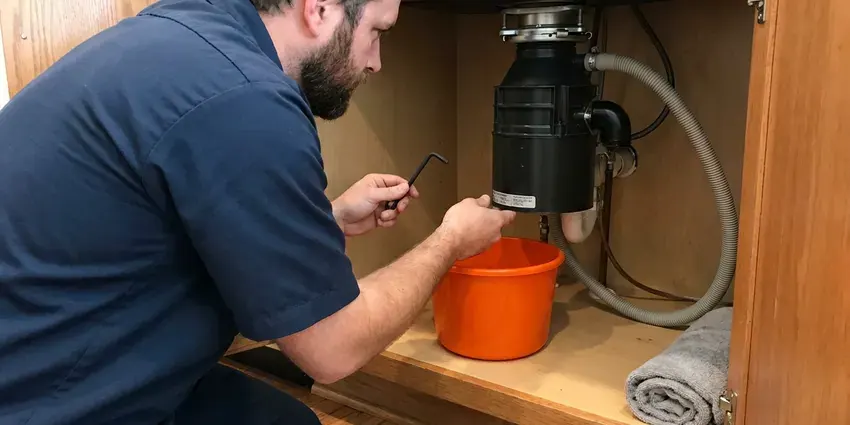

Grease Trap Installation in Dublin, OH
Flow control, vent and a full sink drained to test it on every grease trap we install in Dublin.
- Sized to PDI and ASME
- Local Ohio Plumbers
- Fast Site Visits
- Overnight Installs Available
Failed a FOG Inspection in Dublin, OH?
Most indoor traps are set in a day.
Grease Trap Installs Built to Pass in Dublin, OH
Grease traps fail inspections for boring reasons. The flow control is missing or the unit is one size too small for the kitchen it serves. Those are avoidable. We install grease traps in Dublin with those checks done before the inspector shows up, which is the easiest way to open on schedule and stay open.
Our expertise includes:
- Sampling ports where the sewer authority asks
- Hydromechanical trap selection by GPM
- Automatic grease removal units

Additional Kitchen Plumbing Services in Dublin, OH
Our kitchen plumbing services in Dublin, OH cover sinks, disposals, dishwashers, and grease traps so your kitchen keeps running without backups or leaks.



Garbage Disposal Repair in Dublin


Customers
Why Choose HRL Plumbing for Grease Trap Installation in Dublin, OH?
Downtime is the real cost of this job. We schedule indoor work for closed days or overnight so you do not lose a service. Outdoor jobs are phased so the kitchen keeps running until the new tank is live.
- Traffic-Rated Lids, Outdoor tanks in a drive lane get H-20 rated lids.
- Sized From Your Fixtures, We add up the drain rate of every sink, floor sink and dish machine that ties in.
- Written Labor Warranty, Our workmanship coverage is on paper before we start.
Citywide Coverage
From a single coffee bar to a commissary serving a dozen food trucks, we cover grease trap installs throughout the Dublin area. Only the size changes. Our sizing method and our inspection checklist stay the same on every job.
Experienced Team
Commercial kitchen plumbing is the only thing our grease trap crew does all week. They know the health and sewer inspectors and the questions each one asks. It shows in details like lining up the cleanout with a floor drain. No learning on your dime.
Safety-First Approach
Cutting a slab in an operating kitchen throws silica dust, so we use wet saws and a vacuum and seal off the work area with plastic. We cover every food prep surface nearby. After the cut, we patch to match the floor and let the health inspector see a clean, sealed surface before you reopen. Dust control is not optional.
Trusted Certified Dublin Plumbing Services Professionals
At HRL Plumbing, we take pride in licensed, certified plumbing services throughout Dublin, OH. Those papers on the wall mean something. Our plumbers hold recognized industry credentials, and they follow strict safety and quality rules on every repair, installation and maintenance call we run.
Call Us Now PHCC Plumbing Contractor Recognition
PHCC Plumbing Contractor Recognition Better Business Bureau (BBB) Accreditation
Better Business Bureau (BBB) Accreditation Angi Certified Pro
Angi Certified Pro ISO 9001 Quality Management Certification
ISO 9001 Quality Management CertificationCommercial Grease Trap Installation in Dublin, OH
Hydro-Mechanical Grease Trap Installation in Dublin, OH
Hydromechanical traps use baffles and a vented flow control to pull grease out of water moving at a set rate, usually 20 to 100 gallons per minute. You can put one under a sink, beside a dish station or in a pit in the slab. The flow control is not optional. Skip it and a full sink drain overruns the rating, which sends grease right past the baffles. We look for units certified to PDI G-101 or ASME A112.14.3.

Grease Trap Installation for Schools and Institutions in Dublin
School cafeterias and hospital kitchens cook in big batches and wash in big batches, which means large pot sinks and a dish machine running hard for two hours after each meal. An outdoor gravity tank is the usual answer for that volume. We schedule around the calendar. School jobs fit into breaks, and hospital jobs get phased so meals keep going out.
In-Ground Gravity Interceptor Installation in Dublin, OH
Buffets, grocery delis and kitchens doing several hundred covers a night usually end up with an in-ground gravity interceptor of 1,000 gallons or more. The work is excavation and a level gravel bed, then the tank and its inlet and outlet piping. Heavy clay soils are common in Ohio, and they hold water and shift with the seasons, stressing foundations and sewer lines. What comes out of the hole decides our shoring and backfill. Risers bring the lids to grade.
Zurn Grease Trap Installation in Dublin
Zurn's indoor grease interceptors cover the common sizes from small under-sink units up to 100 GPM, and we set enough of them to know where the gaskets give trouble. The lid gasket is the usual leak point after a few years. We keep spares on the truck. Most Zurn units come with a flow control fitting, and we mount it on the inlet side at the height the instructions call for.
Commercial Grease Trap Installation in Dublin
A commercial kitchen with a three-compartment sink, a pre-rinse station and two floor sinks can push 50 gallons a minute of greasy water at the dinner rush. We size the trap to that peak flow, not the average. Undersized traps are the usual failure. We set the unit, run the inlet and outlet in schedule 40 PVC or cast iron, and add the flow control fitting the manufacturer calls for.
Emergency Grease Trap Services in Dublin, OH
A grease trap backing up into the floor sinks at the start of Friday dinner service means a closed kitchen and a health inspector who may not let you reopen until it is fixed. First job is figuring out whether the clog is in the trap or the pipe on either side of it. Often it is the outlet. A failed trap can often get a stopgap unit that night and a proper replacement later in the week.
New Restaurant Build-Out Grease Traps in Dublin
On a new build-out, the grease trap gets decided before the slab is poured, not after. The drawings and the equipment list from your kitchen designer tell us what will drain where. Changes get expensive. Saw-cutting a finished floor to relocate a trap can add several days to a build-out, so we flag sizing or location problems at plan review.

Food Truck Commissary and Ghost Kitchen Traps in Dublin, OH
Commissary kitchens see a dozen trucks dumping wash water in the same two hours, which is a different load from a restaurant spreading it over a long shift. We size for that spike. Shared delivery-only kitchens can have more sinks per square foot than any dining room, and the trap must handle all of them. Each brand's prep sink counts.
Grease Trap Installation Near Me in Dublin, OH
Restaurant owners around Dublin call us for new installs and the occasional emergency swap, and the phone at (740) 449-7505 is answered seven days a week. Weekend calls get a real person. For a backed-up trap we try to have a tech on site the same day so you do not lose a dinner service.
Local crews know the local inspectors. We know which reviewers want the sizing math on the drawing and which want it on a separate sheet in the permit packet. We are close enough to come back the same day if the inspector asks for a change.
HRL Plumbing at a Glance
- Fully licensed plumbing team covering Dublin, OH
- 24/7 emergency service with same-day scheduling
- Upfront, flat-rate pricing before work begins
- 4.9-star rated by 673+ Ohio customers
Dublin Map
Dublin Information
- Population
- 48,923
- Area codes
- 614/740/380
- Service area
- Dublin and communities within 40 miles
- Nearby
- Columbus, Springfield, Newark, Mansfield
A properly sized grease trap keeps grease out of your lateral and out of the public main in Dublin, OH. Summer humidity causes condensation on cold pipes and toilets, which can drip onto basement ceilings and floors.
Talk to a Plumber
Call HRL Plumbing for honest, reliable plumbing from people who know the trade in Dublin, OH.
Our Specialized Plumbing Services in Dublin, OH
At HRL Plumbing, we handle the full list of plumbing services across Dublin, OH. We go from leak detection all the way to full system installations, for homes and commercial buildings, and we do it quickly at a fair price. Explore our core services below:


Our Grease Trap Installation Process in Dublin, OH
Every grease trap install in Dublin follows the same basic sequence: size it, permit it, set and test it.
First Call
Reach us at (740) 449-7505. We ask what drains to the trap and when you need to open.
Site Visit
A plumber checks the space in your Dublin kitchen, looks at the existing drain lines with a camera and finds a cleanable spot for the trap.
Permit Filing
The plumbing permit and any FOG review go in under our license, with the sizing math attached so it does not bounce back.
Frequently Asked Questions About Grease Trap Installation in Dublin
Small under-sink hydromechanical traps usually land between $1,000 and $3,000 installed, and buried interceptors with excavation commonly run $5,000 to $20,000 or more. Most of the difference is labor, mainly digging and concrete repair. Permits add a little. We quote in writing after a site visit, with the trap, the labor and the permit fees listed as separate lines.
Zurn and Watts make up a lot of our indoor installs, with Schier and Endura when a plastic body makes more sense. For outdoor work we set precast concrete tanks from nearby casting yards, or polyethylene interceptors when weight or access is a problem. Any certified brand works. What we will not install is an uncertified import trap, because inspectors reject them and the parts disappear after a year.
In everyday talk the two names get swapped. Strictly, a grease trap is the small indoor unit rated in gallons per minute, and an interceptor is the large tank rated in gallons of capacity. Codes vary on the wording. Some plumbing codes call both of them interceptors and separate them as hydromechanical and gravity, so we use whatever terms your permit office uses.
We start with a fixture list and the drain rate of each fixture. Each sink's volume and drain time give a flow rate, and the dish machine's spec sheet gives its flow. That gives the GPM figure. Indoor units match the GPM, and outdoor tanks get sized by volume and retention.
The common rule is to clean before grease and solids fill 25 percent of the trap's depth. For a small indoor trap in a busy kitchen, that can be weekly. Outdoor tanks go longer. A gravity interceptor typically gets pumped monthly to quarterly, and some sewer programs set the schedule for you.
As close to the grease-producing fixtures as the space allows, so grease does not cool and coat the pipe before it reaches the trap. Indoor units need room above for the lid to come off and for someone to kneel and clean. Never under a cook line. Outdoor interceptors go where a pump truck can park within reach of the hose and where the lids will not end up under a dumpster or a parked car.
An under-sink hydromechanical trap with good access is usually a half-day job, including the flow control and a leak test. Floor-recessed units take longer because we cut and patch concrete. Outdoor tanks are different. A buried interceptor runs two to five working days after permit, mostly driven by the dig and the paving repair.
Nearly every food business needs one. Codes require one wherever sinks or dish machines send greasy waste to the sewer. A few low-grease operations get waived, and the sewer authority makes that call. Ask before you sign the lease.
What People Are Saying About Our Plumbing Experts?

Lisa C.
Water was pouring out from under the washing machine on a holiday weekend. HRL Plumbing talked me through closing the valves over the phone and had a plumber at the house within ninety minutes. It was a burst fill hose.
Emergency Plumbing · Dublin, OH
Carlos V.
Our house still had galvanized pipe, and upstairs the shower was a trickle. The crew repiped everything in PEX over three days and patched every drywall hole before they left. The pressure difference is night and day.
Repiping · Springfield, OH
Monica A.
Our water bill nearly doubled in one month with no change in how we used water. The tech checked the meter, heard the leak under the hallway with his equipment, and opened a hole about a foot square. Fixed the same day.
Slab Leak Repair · Dublin, OH
Patricia H.
We had a slab leak that two other companies could not find. HRL Plumbing located it in under an hour with a listening device. They rerouted the line through the attic instead of breaking up the floor, so we kept our kitchen tile.
Slab Leak Repair · Newark, OHSofia M.
Two new toilets went in during one visit. The tech set them on new wax rings and swapped the old supply lines. He also noticed our bathroom faucet dripping and replaced the cartridge while he was there. No mess left behind.
Toilet Installation · Dublin, OHKaren W.
After our third pinhole leak in copper, we stopped patching. HRL Plumbing gave us a written plan room by room and repiped the house in PEX while we stayed in it. The crew covered our floors every morning and cleaned up every night.
Repiping · Mansfield, OH